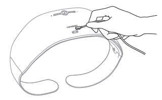

| 产品构成 |
| ① LumiDiet 腰带本体 |
| ② USB磁性充电线缆 |
| ③ 携带包 |
| ④ 快速指南 |
 |
| 使用周波数 : 2.402 ~ 2.480 GHz 定格消费电流 : 4W(3.3V 1200mAh) 输入电压 (S 款式): 5V 1A DC 输入电压 (S+ 款式) : 5V 2A DC 大小/重量 : Medium258.4X179X110.5(mm)/460g, Large258.8X218X110.5(mm)/480g |
| STEP1 |
|  |
| 1.1 充电 (S+ 款式) |
| 把产品同寄的充电电缆连接在产品前面下端部的磁充电口就即可充电。 磁充电电缆有+\-磁性，按图所示的方向连接就充电端子会相互连接。 因方向连接不上的话，请把端口方向转180度之后重试 。放电状态到完充约需要3小时。 |
| 根据充电器的出力充电时间可能有所差距。 |
 |
| 1.2 充电 (S 款式) |
| 领取产品之后使用前一定要充电后使用. 打开本体里面下部的橡皮盖用跟产品一起来的USB充电线缆链接到USB充电器或充电端口. 一般的5-pin USB (比如安卓手机充电器）也可以充电. 放电状态到完充约需要3小时. |
| 根据充电器的出力充电时间可能有所差距。 |
| 2. 确认充电状态 | |
| - | 在充电时电源按钮会闪现, 完充时会反复快速闪现3次 |
| - | 完充时 按每次30分为基准约可以使用5次 （根据使用环境和电池寿命会有所差距） |
| - | 本机器过30分后会自动关机 |
| - | 如果电池余量低于30%电源按钮会发出赤色的光。此时，请充电后使用。 |